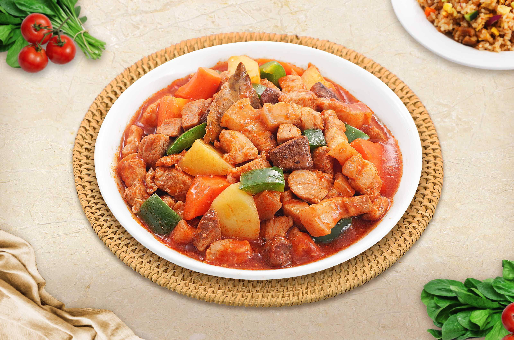

Pork Menudo

Description
Pork menudo is another dish that can be found in any Filipino gathering. In addition, it can commonly be eaten as part of
an everyday meal.Filipino pork menudo traditionally consists of chunks of pork that is stewed in a tomato sauce. Liver and
potatoes are added afterwards while vegetables like bell peppers, green peas, carrots, raisins and chickpeas may also be added.
Some versions of menudo could even have chorizo, ham or hotdog for a richer flavor. Menudo reminds me of of another Filipino dish,
mechado, except menudo has the addition of chickpeas and raisins.
Ingredients
- 2 ¼ boneless pork chops
- 2 ¼ boneless pork chops
- 3 tablespoons olive oil
- 2 cloves garlic, minced
- 1 onion, diced
- salt and pepper to taste
- 2 tomatoes, diced
- 1 (15.5 ounce) can garbanzo beans, drained
- 1 (1.5 ounce) box raisins
- 2 potatoes, diced
Steps
- Bring a large pot of lightly salted water to a boil; add pork chops and return to a boil.
- Cook pork chops at a boil for 5 minutes, remove, and set aside to cool.
- Remove 1 cup of broth from the pot and set aside for later use. Once chops are cooled to the touch, cut them into bite-size pieces.
- Pour in soy sauce, vinegar, and water, and add the pickling spice.
- Return water to a boil; add pork liver to the pot and cook at a boil until tender, 7 to 10 minutes.
- Drain and discard liquid. Set liver aside to cool; cut into bite-size pieces.
- Heat olive oil in a large skillet over medium heat; cook and stir onion and garlic in hot oil until tender, about 5 minutes.
- Stir pork chops into onion and garlic; cook and stir together for 5 minutes.
- Season with salt and pepper. Add tomatoes and reserved broth; cover and cook for 10 minutes.
- Stir pork liver, garbanzo beans, raisins, and potatoes into the mixture; cover and simmer until potatoes are fork tender, about 10 minutes.